Cinq moteurs locaux, clonage à partir d’un court échantillon
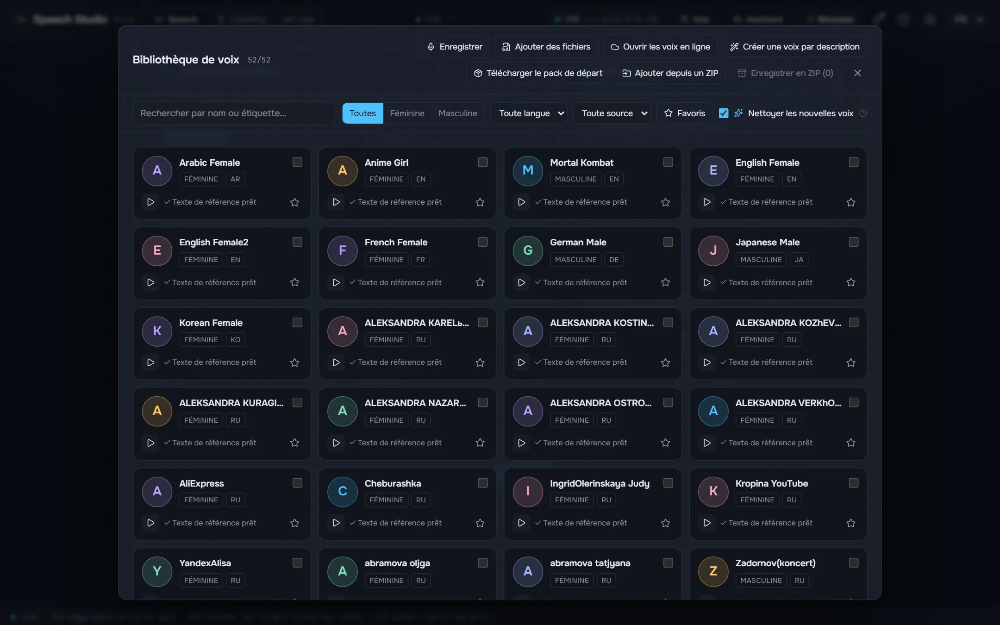
Higgs Audio v3, Fish Audio Drama 3, Supertonic 3, Qwen3-TTS et Qwen3-TTS avec l’accent russe tournent sur votre carte.
Un studio de bureau qui donne une voix au texte avec cinq moteurs locaux et retransforme les enregistrements en texte avec qui parle.
Windows 10/11 x64 et une carte NVIDIA avec 8 Go de mémoire vidéo. Les modèles et moteurs se téléchargent depuis le studio, quand vous le décidez.
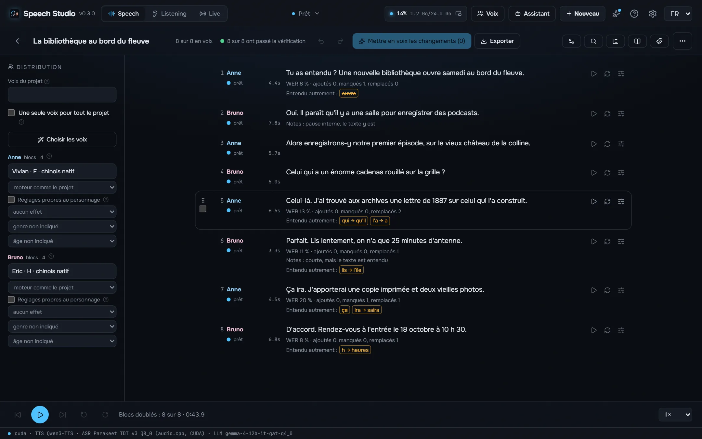
Faits sur cet ordinateur avec le studio tel qu’il est livré, chaque prise vérifiée à l’oreille et exportée telle que le studio l’a enregistrée. Tous les moteurs lisent le même texte.
Il pleure dans mon cœur comme il pleut sur la ville ; quelle est cette langueur qui pénètre mon cœur ?
Я помню чудное мгновенье — передо мной явилась ты, как мимолётное виденье, как гений чистой красоты.
Встреча 12.03 в 18:30, билет стоит 150 руб., а на улице −5 °C.
Shall I compare thee to a summer's day? Thou art more lovely and more temperate: rough winds do shake the darling buds of May, and summer's lease hath all too short a date.
¿Qué es poesía?, dices mientras clavas en mi pupila tu pupila azul. ¿Qué es poesía? ¿Y tú me lo preguntas? Poesía… eres tú.
Amor é fogo que arde sem se ver, é ferida que dói, e não se sente; é um contentamento descontente, é dor que desatina sem doer.
床前明月光，疑是地上霜。举头望明月，低头思故乡。
Les voix de personnes connues sont de la synthèse : un clone fait à partir d’un court échantillon du pack de voix du studio, pas un enregistrement de ces personnes. Les poèmes sont dans le domaine public.
Supertonic 3 et Qwen3-TTS placent l’accent russe au hasard. Le studio le marque avant que le moteur ne lise : RUAccent choisit замо́к ou за́мок, му́ки ou муки́ selon la phrase, et les nombres, dates et unités sont écrits en toutes lettres à leur cas.
Старинный замок стоял на холме, а дверь в него запирали на тяжёлый замок. Из этой муки пекут хлеб, но для пекаря это настоящие муки.
Мы долго стояли у берега и смотрели, как белки прыгают по веткам. В яйце много белка, а в этой задаче много лишних белков.
Mesuré sur une RTX 4090 sous Windows 11 avec Speech Studio 0.2.0 tel qu’il s’installe : le même texte russe de 17 secondes, la deuxième exécution de chaque moteur, son modèle déjà chargé. Le premier son est le délai avant que l’audio commence dans la fenêtre ; la mémoire vidéo est le pic pendant la lecture.
| Moteur | Pour | Plus rapide que le temps réel | Premier son | Streaming | Téléchargement | Mémoire vidéo |
|---|---|---|---|---|---|---|
| Supertonic 3 | Le plus rapide, voix fixes sans clonage | 168× | 103 ms | Par phrase | 0,1 Go | 1,0 Go |
| Qwen3-TTS | Rapide, voix prédéfinies et clonage | 12× | 19 ms | Au fil de la parole | 2,2 Go | 3,1 Go |
| Qwen3-TTS + ru stress LoRA | Russe avec les bons accents, clonage | 10× | 26 ms | Au fil de la parole | 2,3 Go | 3,5 Go |
| Fish Audio Drama 3 | Le meilleur jeu et la meilleure qualité, clonage ; dès 6 Go de mémoire vidéo | 7,0× | 326 ms | Au fil de la parole | 21,4 Go | 21,9 Go |
| Higgs Audio v3 | Émotions et sons par balises, clonage | 2,3× | 1,0 s | Au fil de la parole | 5,3 Go | 18,1 Go |
Mesuré sur le même ordinateur avec Speech Studio 0.2.1 tel qu’il s’installe : un enregistrement russe de 5 minutes d’une seule voix transcrit dans Listening sans séparer les locuteurs, chargement du modèle compris. × indique combien de fois plus vite que la durée de l’enregistrement ; la mémoire vidéo est le pic pendant la tâche, et le modèle la libère à la fin.
| Modèle | Pour | Sur la carte | Sur le processeur | Langues | Téléchargement | Mémoire vidéo |
|---|---|---|---|---|---|---|
| Parakeet TDT v3 | Rapide et précis, reconnaît la langue tout seul | 96× | 33× | 25 | 0,7 Go | 1,2 Go |
| Parakeet Ultra | Parakeet affiné par Moondream : moins d’erreurs de reconnaissance | 73× | 33× | 25 | 0,7 Go | 1,0 Go |
| Nemotron 3.5 | La langue est fixée, pas de mots égarés dans une autre | 73× | 29× | 28 | 0,7 Go | 1,0 Go |
| Whisper large-v3-turbo | Celui qui reconnaît le plus de langues | 19× | 2,2× | 99 | 1,6 Go | 1,6 Go |
Chaque étape d’un tour de conversation, mesurée sur le même ordinateur. L’étape la plus longue est la réflexion de l’agent lui-même, qui dépend de l’agent et de son modèle.
| Votre phrase en texte après que vous vous êtes tu (Parakeet sur la carte, pause de fin de phrase comprise) | 641 ms – 735 ms |
| L’agent écrit sa réponse (Claude Sonnet, mesuré) | 2,0 s – 3,9 s |
| Premier son de la réponse (selon le moteur, voir plus haut) | 19 ms – 1,0 s |

Higgs Audio v3, Fish Audio Drama 3, Supertonic 3, Qwen3-TTS et Qwen3-TTS avec l’accent russe tournent sur votre carte.
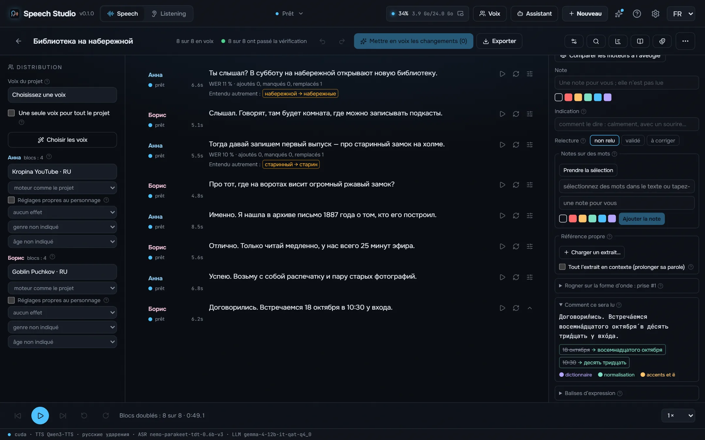
Les nombres au bon cas et au bon genre, les dates, heures, sommes et unités sont écrits en toutes lettres avant que le moteur ne lise.
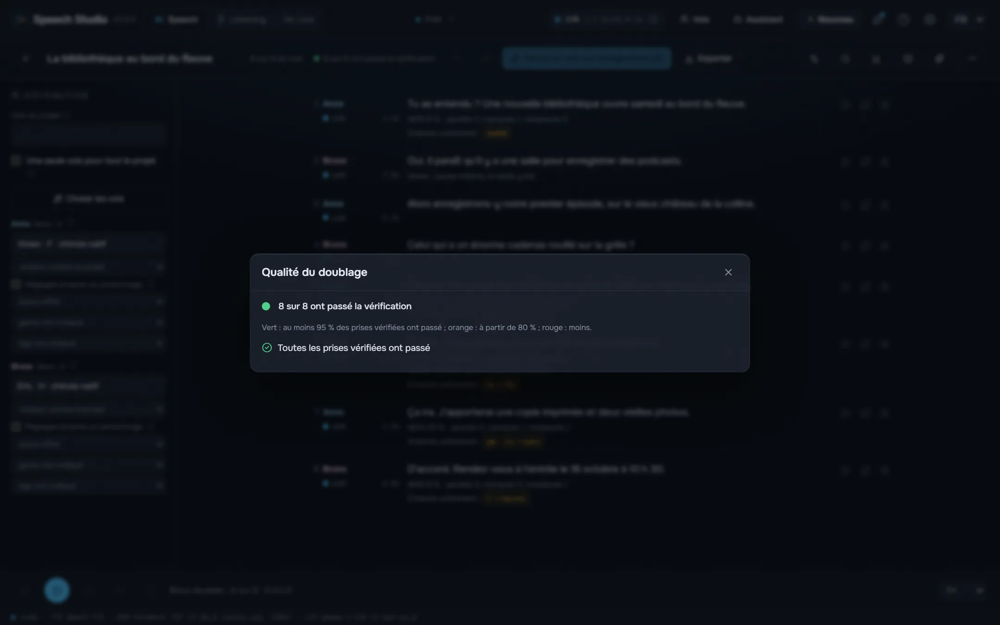
Chaque prise est reconnue en retour et comparée au texte mot par mot, avec des contrôles de saturation, de silence, de coupure, de clic, de phrase répétée et de bruit au lieu de la parole.
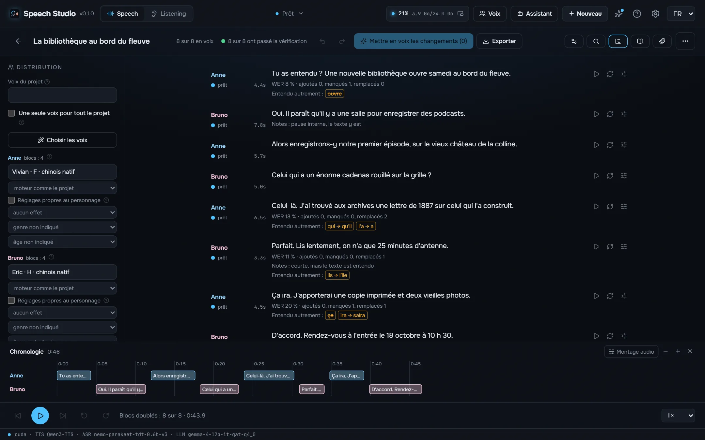
Les lignes «Anna :» et «[Anna]» deviennent des personnages avec leurs voix, le réalisateur écrit un podcast sur un sujet pour plusieurs voix et la timeline montre chaque chevauchement.
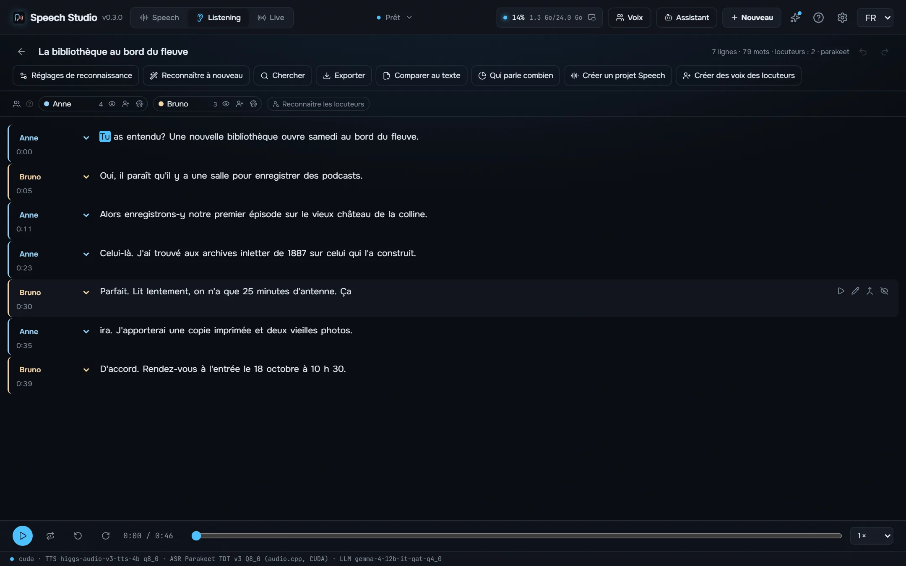
Un enregistrement, une vidéo ou un lien devient une transcription avec qui a dit quoi et quand : Parakeet-TDT, Nemotron 3.5 ou Whisper, jusqu’à huit locuteurs, lecteur karaoké, montage par le texte et export en SRT, VTT, ASS, TXT ou JSON.
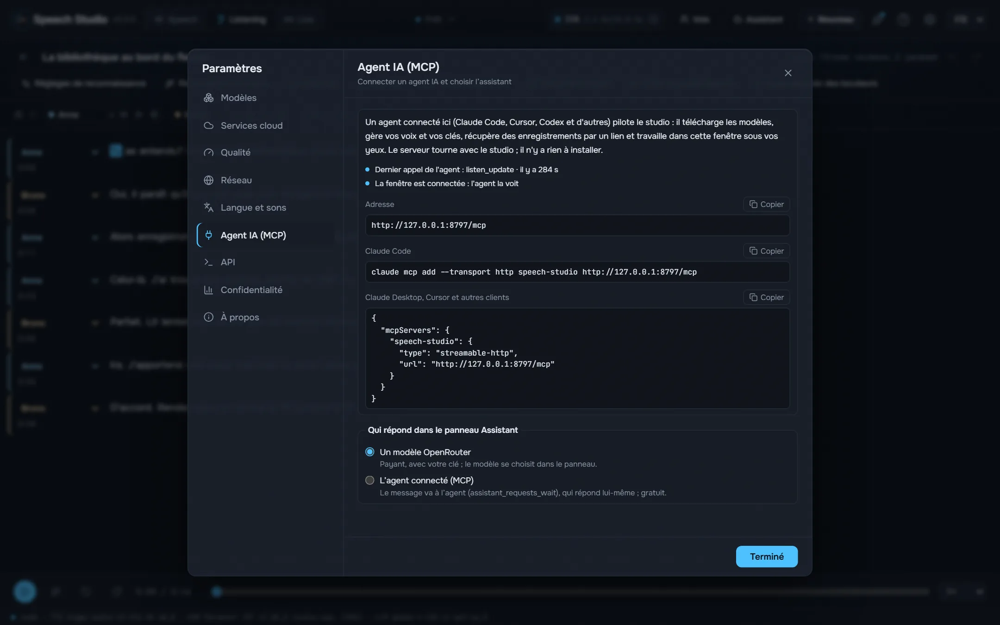
Tant que le studio est ouvert, un agent comme Claude Code ou Cursor fait par MCP tout ce que fait la fenêtre : donne une voix à un texte dans un fichier, modifie les projets, distribue les voix, transcrit et vérifie les enregistrements.
Le studio lui-même, dans votre langue.
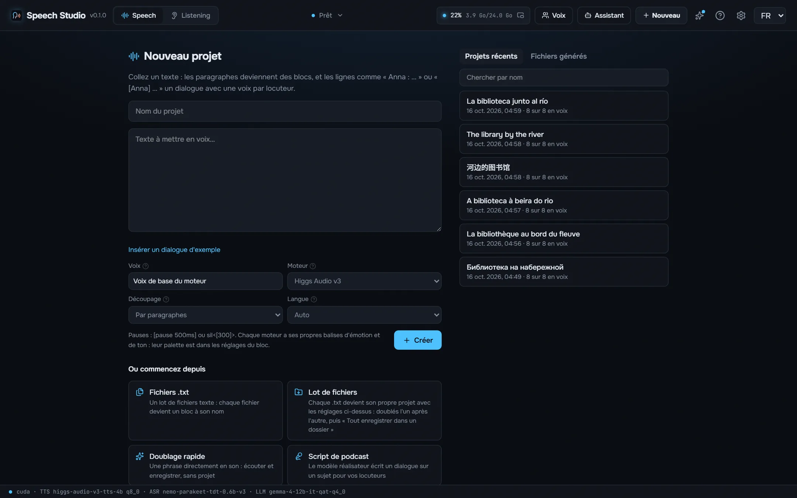
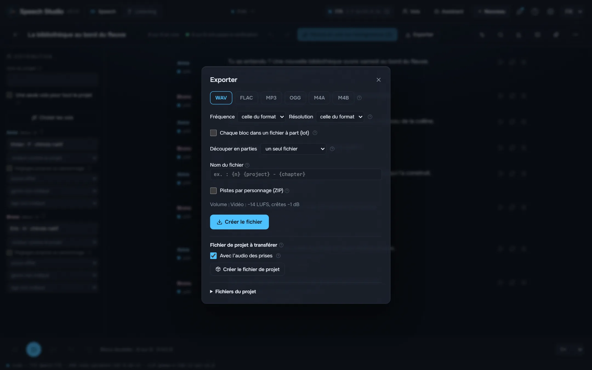
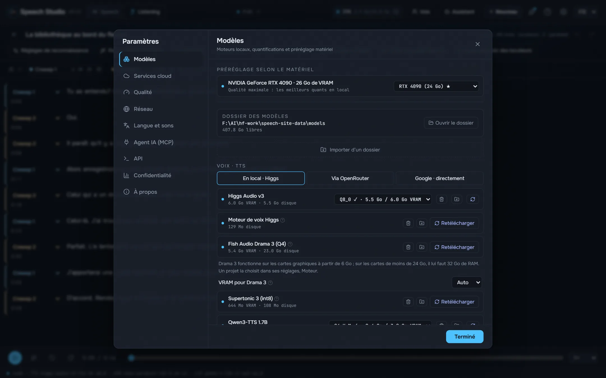
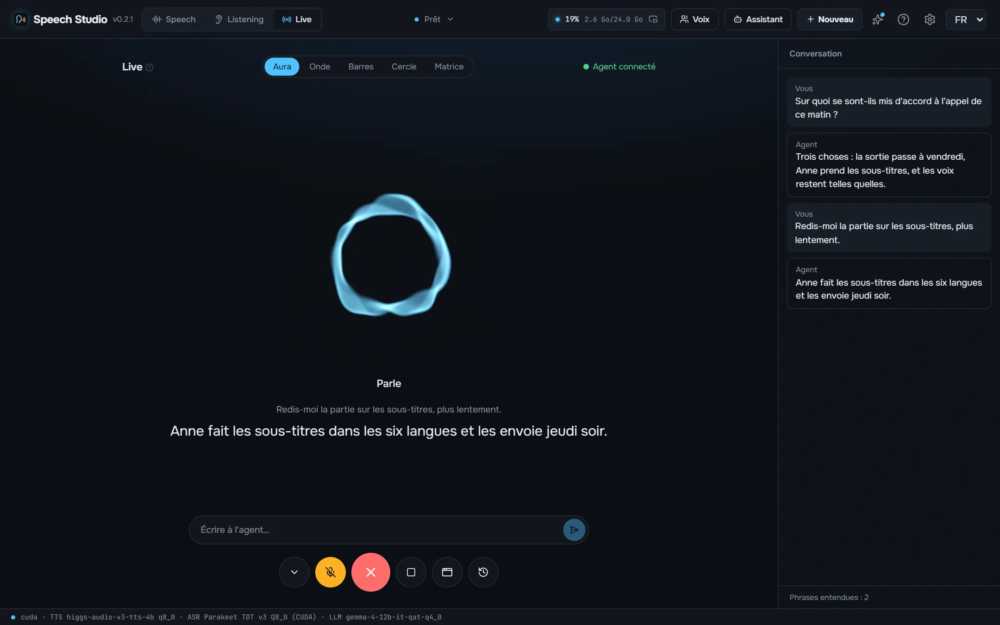
Une NVIDIA avec 8 Go de mémoire vidéo ou plus et un pilote récent. Drama 3 tient entier dans 24 Go ; dès 6 Go ses experts vivent en RAM, qui doit alors faire 32 Go. Environ 9 Go de disque pour les modèles et moteurs par défaut.
Oui. Le studio est gratuit et open source, et les modèles se téléchargent gratuitement depuis lui.
Vos textes et enregistrements sont à vous et restent sur votre disque.
Les nombres au bon cas et au bon genre, les dates, heures, sommes et unités sont écrits en toutes lettres avant que le moteur ne lise. L’accent, le «ё» et les homographes sont placés par RUAccent selon la phrase.
Supertonic 3 et Qwen3-TTS placent l’accent russe au hasard. Le studio le marque avant que le moteur ne lise : RUAccent choisit замо́к ou за́мок, му́ки ou муки́ selon la phrase, et les nombres, dates et unités sont écrits en toutes lettres à leur cas.
Le studio est sous MIT. Les modèles non : chacun garde sa propre licence, listée dans le README. Lisez-les avant de publier ou de vendre ce que vous doublez. README
Tant que le studio est ouvert, un agent comme Claude Code ou Cursor fait par MCP tout ce que fait la fenêtre : donne une voix à un texte dans un fichier, modifie les projets, distribue les voix, transcrit et vérifie les enregistrements. Les outils écrits pour l’audio d’OpenAI passent par son API compatible.
claude mcp add --transport http speech-studio http://127.0.0.1:8797/mcp
Le service est compilé dans l’exe de bureau et exécute les moteurs dans le même processus via leurs C ABI. Pas un seul processus Python à l’exécution.
React UI ─┐
├─ Speech Studio.exe (Tauri window + Rust/axum speech-server)
Rust axum ┘ │
├─ Higgs Audio v3, Drama 3, Qwen3-TTS (C++/CUDA, GGUF)
├─ Parakeet, Nemotron 3.5 (transcribe.cpp, GGUF)
└─ Supertonic, RUAccent (ONNX Runtime)